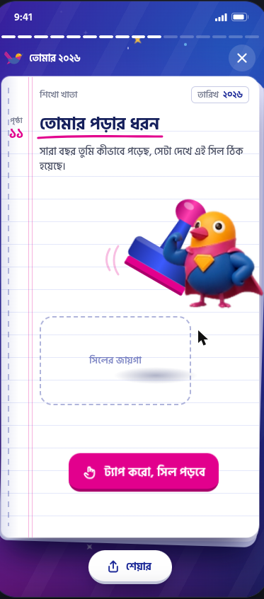

Direction B — “Marksheet”: the product & the build
The idea we are productizing is the prototype at shikho-year-end-wrap.vercel.app/?v=b — the year rendered as a Shikho notebook (খাতা) that ends in a shareable marksheet. This document is in two halves: Part 1 walks every screen of the real prototype and says where each number comes from; Part 2 is the build spec — APIs, database columns, states, and the gaps to close.
Screens captured live from ?v=b on 28 Oct 2026 · example student “নিশাত, Class 9 Science” (the prototype states all numbers are examples) · data mapping from SC-1737 · backend from ST-25781 + shikho-spec analytics/kpi/data_pipeline_bronze.
Part 1 · The product
What Direction B is
Three directions were prototyped (A Poster, B Marksheet, C Journey). B is the Marksheet: the year as a Shikho notebook (খাতা), a rubber-stamp for the learner type, and a marksheet share card at the end. It lives inside the real app home and opens from a banner. Tap the right half of the phone to advance, left half to go back, press-and-hold to pause.

তোমার ২০২৬ খাতা — the banner that opens the story
The Wrap is not a separate app. It sits on the paid student’s home as a banner card — “তোমার ২০২৬ খাতা / সারা বছরের পড়ার হিসাব এক খাতায়” with a খাতা খোলা button. Tapping it opens the full-screen story.
SC-1737).
The notebook cover — নাম · শ্রেণি · বিভাগ
The story opens on a “বার্ষিক খাতা” cover that writes the student’s identity in by hand: নাম নিশাত · শ্রেণি নবম · বিভাগ বিজ্ঞান. Pure personalisation, zero computation — it just makes the notebook theirs.
Students.fist_name (sic), Students.class, Students.study_group haveStudents.class may not update yearly — BI (Mahizebin/Novera) to confirm it reflects the 2026 class.
মোট পড়ার সময় — ১৪২ ঘণ্টা
Total time studied, made concrete: ১৪২ ঘণ্টা ÷ ৬ = ২৩.৭ → প্রায় ২৪টা পুরো স্কুল দিনের সমান (each notebook mark = one 6-hour school day). Turning a raw number into something a 15-year-old feels.
*_duration columns in user_activity_duration_agg (seconds) have
লাইভ ক্লাসের হাজিরা — ৬৩ / ৭২
An attendance register (হাজিরা খাতা) that ticks off every class: তুমি ৭২টার মধ্যে ৬৩টা লাইভ ক্লাসে ছিলে. High attendance earns a title stamp — ফার্স্ট বেঞ্চার (এই বছরের খেতাব).
student_attendees, counting a class only when the student stayed ≥ a minimum (e.g. 10 min or 30% of class length) havelessons where content_type = LiveClass, by academic_program_id, from enrolment date.content_id (or room_id when empty) to teacher_attendees for class length.
কুইজের হিসাব — ১৪৮টা কুইজ
Quizzes done across the year, drawn as a cumulative graph (প্রতি মাস শেষে মোট কুইজ, মার্চ → ডিসেম্বর), with a nudge — আর ২টা হলেই কুইজ চ্যাম্পিয়ন — and a কুইজ যোদ্ধা badge.
mcq_user_quiz_daily.quiz_completed, cross-checked with user_activity_duration_agg.quiz_count have
ভিডিও দেখা — ২,৮৬০ মিনিট
Minutes of video watched, told as film strips: প্রায় ২৪টা সিনেমার সমান (each cell = one 2-hour movie). Badge: ভিডিও ম্যারাথনার.
recorded_videos_duration + animated_videos_duration (seconds); counts recorded_videos_count + animated_videos_count have

তোমার পড়ার ধরন → নিয়মিত পড়ুয়া
This is the “learned something about myself” beat the CEO asked for. The student taps to drop a rubber stamp, and the year’s habit is named: নিয়মিত পড়ুয়া (Regular Studier). Under it: তুমি ১৮৭ দিন পড়তে এসেছ — সপ্তাহে গড়ে প্রায় ৫ দিন, on a GitHub-style activity grid, with the longest streak called out: ২ থেকে ২৪ আগস্ট, টানা ২৩ দিন!
user_activity_duration_agg.activity_date — plus, per SC-1737, days where the only activity was Shikho AI (gen_ai_conversations), a QR scan (qr_scan_logs) or an eBook open GET-source
মার্কশিট ২০২৬ — the shareable climax
Everything collapses into one Shikho-branded marksheet — নিশাতের এক বছরের পড়ার হিসাব — with a serial no., date, name/class/dept, and every stat as a result row:
| বিবরণ | ফলাফল | Source |
|---|---|---|
| পড়ার দিন | ১৮৭ দিন | active days |
| মোট পড়ার সময় | ১৪২ ঘণ্টা | *_duration sum |
| টানা সর্বোচ্চ | ২৩ দিন | longest streak |
| লাইভ ক্লাস | ফার্স্ট বেঞ্চার | attendance tier |
| কুইজ | কুইজ যোদ্ধা | quiz tier |
| ভিডিও | ভিডিও ম্যারাথনার | video tier |
| বছরের বিষয় | পদার্থবিজ্ঞান | top subject by time rebuild |
| পড়ার ধরন | নিয়মিত পড়ুয়া | learner type |
POST /api/public/v1/report-card/share {prospect_id, program_id} → {report_id, short_url} via the Mask shortener; if Mask is down the card returns without a short link (silent) — surface a fallback have + hardenteacher_attendees.teacher_id ⋈ Teachers, “most attended teacher” — but there is no slide for it in ?v=b. Decision needed: add a teacher slide, or fold it into the marksheet.Part 2 · The build
The data each slide needs, the backend that already exists from last year (ST-25781), the real database columns, and the app states to design. Facts cited; unverified items labelled.
2.1 Per-slide data contract
| Slide | Metric | Source (table.column) | Status |
|---|---|---|---|
| Cover | name / class / dept | Students.fist_name, .class, .study_group | have |
| Study time | total seconds + by type + by month | user_activity_duration_agg.*_duration | have |
| Attendance | joined / held / rate | student_attendees ⋈ lessons(LiveClass) ⋈ teacher_attendees | have |
| Quizzes | completed + monthly | mcq_user_quiz_daily.quiz_completed | have |
| Video | minutes + count | recorded_/animated_videos_duration|count | have |
| Active days + streak | distinct dates, longest run | user_activity_duration_agg.activity_date (+ AI/QR/eBook) | have + GET-source |
| Best subject | top subject by time | rebuild from watch_logs/program_video_watch_logs.subject_id + student_attendees⋈lessons.subject_id + mcq_user_chapter_daily.subject_name | rebuild |
| Learner type | stamp label | derived rule over active-days / time-of-day / method / focus | define |
| Marksheet share | card + short URL | public-report-card + Mask | have |
2.2 Backend from last year (ST-25781, status: deployed)
Served by the analytics service. The share card already shipped — reuse it, don’t rebuild.
| Endpoint | Purpose | Source |
|---|---|---|
GET /api/v1/results/{result_type}/quarter/{identifier} | quarter/year report | result_handler.go:12 |
GET …/performance/trend/{identifier} | week-over-week trend | result_handler.go:35 |
POST /api/public/v1/report-card/share | create shareable card + short URL | public_result_handler.go:337 |
GET /api/public/v1/report-card/{report_id} | open a shared card (no login) | public_result_handler.go:296 |
// share — request / success POST /api/public/v1/report-card/share { "prospect_id": str, "program_id": str } 201 { "report_id": str, "short_url": str, "short_code": str, "created_at": ts } // Mask (shortener) down → 201 WITHOUT short_url, no error raised (public_report.go:104)
Scoring rules already in code (reuse for any score/tier): overall class%×0.5 + exam%×0.5; class/exam clamp to 100; levels ≥80 good / ≥60 moderate / else needs_improvement; grades A+/A/A-/B/C/D/F at 80/70/60/50/40/33. Known bugs to avoid inheriting: AnimatedLessonsWatched and PracticeQuizzesParticipated are hardcoded 0; last-week rank equals current rank.
Config: PUBLIC_API_CACHE_TTL 24h · PUBLIC_API_RATE_LIMIT 100/min · PUBLIC_REPORT_REDIRECT_URL https://report.shikho.com/report/view. Errors: 401 user_id not found in context · 400 MISSING_FIELDS · 404 NOT_FOUND · 500 SERVICE_ERROR.
2.3 Database column types
migrations/teachmint.sql ships real DDL (the attendance tables below). For every warehouse aggregate, column names are verified from source but Postgres types are inferred — confirm with datafuse.information_schema.columns.| Table | Columns the Wrap uses | Types |
|---|---|---|
student_attendees / teacher_attendees | id, room_id, user_id/teacher_id, duration, join_count, session_count, join_time, leave_time, (content_id) | real: varchar PK, integer, timestamptz |
user_activity_duration_agg (datafuse; live 2024-11-03; DAG 40 6 * * *) | activity_date, live_class_duration, recorded_/animated_videos_duration, recorded_/animated_videos_count, quiz_count (+ model-test / live-exam / smart-note durations) | inferred: date, int (sec), int |
mcq_user_quiz_daily / mcq_user_chapter_daily | quiz_completed · total_questions, total_correct, hard_question_correct, total_time_spend, subject_name | inferred int/text · APPEND mode → dedupe |
lessons | content_type, content_id, academic_program_id, subject_id, subject_name, chapter_id, start_time, end_time | inferred |
Students / Transactions / Teachers | profile, paid-cohort, teacher names | inferred |
Platform notes: no foreign keys anywhere; soft-delete via is_active/is_deleted; server timestamps are BD-local (UTC+6) — matters for any time-of-day cut.
2.4 App states to design (current app Figma: Homepage Redesign 2026)
The current app expresses states as discrete frames (no Figma variant component sets). The Wrap must supply the equivalents:
| State | Precedent in app | Wrap needs |
|---|---|---|
| Loading | Home (Skeleton), Routine (Skeleton) | skeleton for the banner + each slide while the record loads |
| Empty / low-data | Empty State 412, Routine Empty State | the “Fresh Start” fallback for students below the minimum — size it from BI |
| Not available | If previous quarter is not purchased | non-paid or is_report_available=false → banner hidden |
| Disabled / toggle | Disabled, radio / active | the “নাম লুকাও” privacy toggle states |
| Scroll host | 6-step collapsing hero | banner behaviour across the home hero collapse |
Open gaps — close before committing the date
user_activity_duration_agg has no subject column; the “বছরের বিষয়” marksheet row must be rebuilt from three subject-carrying logs, and SC-1737 says it’s “not checked yet” whether they sum to the agg total. This gates the marksheet.
datafuse. The ১৮৭-days count and the streak depend on them. Confirm they can be piped by ~10 Dec, or the active-day number is video/quiz/class-only.
Screens: shots/b_00…b_09 (captured from ?v=b, 28 Oct 2026). Example numbers are the prototype’s own placeholders. Everything in Part 2 is cited to ST-25781, SC-1737 or the shikho-spec source; inferred items are marked.